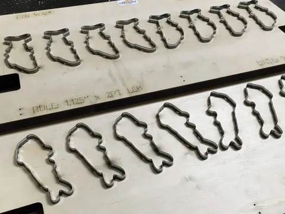
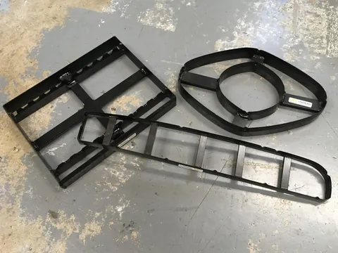
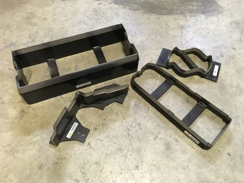
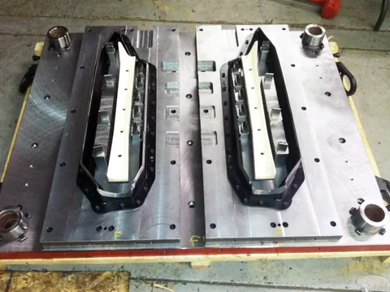
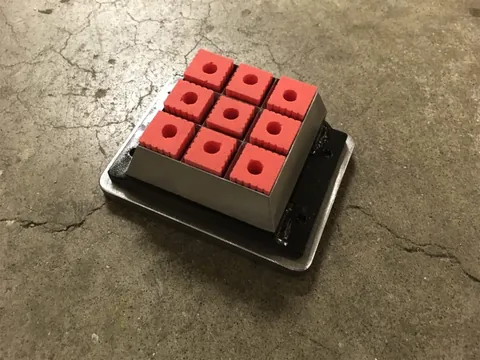
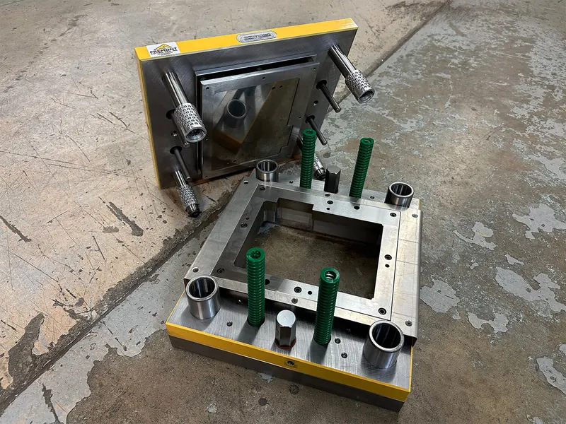

Home / Die types
Seven kinds of cutting die, side by side.
Each type trades the money you put in against how long the die lasts and how tight it cuts. Six are built to your part, and the specs below are the ones Fremont publishes for each. The seventh, specimen dies, is made to test standards and has its own catalog.

Steel rule dies
Built from pre-hard, pre-sharp steel rule. The blade runs from 2pt (0.028″, 0.71mm) to 8pt (0.112″, 2.84mm) thick and 0.75″ (19mm) to 3.00″ (76.2mm) high. The cutting edge can be serrated, center bevel or side bevel.
Ejection material, locators, weld, braze and mounting holes can be added in most cases. Every steel rule die is bent on CNC auto benders.
- Die life
- 10,000–100,000Low to medium, in impressions
- Tolerance
- 0.010″–0.060″0.25–1.52mm. Depends on the rule chosen and, more, on the shape of the part.
- Investment
- Low
- Size options
- Almost endless
- When it’s dull
- Re-ruledCase-hardened rule can’t be resharpened, so a dull die is re-ruled.

Viking dies
Also called clicker dies or pre-hard / pre-sharp dies.
Think of a Viking die as the little brother of a forged die. It is built from pre-hard, pre-sharp cutting rule, .118″ (3mm) to .157″ (4mm) thick, in heights of .75″ (19mm), 1.25″ (31.75mm) and 2″ (50.8mm).
Edges can be serrated, center bevel or side bevel. In most cases the operator can see through the die, which makes better use of the material being cut.
- Die life
- 10,000–100,000Low to medium, in impressions
- Tolerance
- 0.032″0.81mm
- Investment
- Low
- Size options
- Any
- When it’s dull
- ReplacedThe blade is case hardened. Fremont also refurbishes, revises and repairs other makers’ Viking dies.

Forged dies
Built from special forged rule, 4140, S7 and stainless steel, among others. Die walls are normally .25″ (6.35mm) to .50″ (12.7mm) thick, with almost unlimited heights.
Cutting edges are usually center bevel, straight inside wall (SIW) or straight outside wall (SOW).
- Die life
- 100,000+High, in impressions
- Tolerance
- 0.015″–0.005″0.38–0.125mm. The tight end comes when machining is introduced.
- Investment
- Moderate
- Size options
- Small to medium/large
- When it’s dull
- ResharpenedReleveled and resharpened many times: the heat treat is a through hardening.

Contour trim dies
Built much like a forged die, this tooling is almost always machined and comes with a matching striking anvil. Die and striker are usually mounted in a die shoe for precise alignment.
An excellent choice for medium to large runs of materials that are hard to cut.
- Die life
- 100,000+High, in impressions
- Tolerance
- 0.015″0.38mm
- Investment
- Moderate to high
- Size options
- Basically unlimited
- When it’s dull
- ResharpenedLike a forged die, re-machined and resharpened many times.

Machined dies
Every Fremont die is machined to a degree. These are the ones that are almost 100% CNC machined, which takes much of the human element out.
Built from a solid piece of 4140, S7, A2, D2 or stainless steel, among others. Heights and bevels are almost unlimited.
- Die life
- 100,000+High, in impressions
- Tolerance
- 0.005″–0.002″0.127–0.05mm on lathe and VMC; 0.001″ (0.025mm) with wire EDM.
- Investment
- Moderate to high
- Size options
- Almost any
- When it’s dull
- ResharpenedReleveled and resharpened many times. Other makers’ machined dies are refurbished and repaired too.

Match-metal dies
Also called punch and die, male/female or by-pass dies.
Built from solid S7, A2 or D2, among others.
Used when one or more of these apply: the material is hard to cut with a sharp-edge die, the tolerance is tight, or the run is large. Gaskets are a typical part.
- Die life
- 1,000,000+Very high, in impressions
- Tolerance
- Up to 0.001″0.025mm
- Investment
- High
- Size options
- Any
- Typical work
- GasketsHard-to-cut material, tight tolerance or large runs.
Testing to a standard?
Specimen dies for ASTM, ISO, JIS and DIN tests are kept in stock, with molds, presses and accessories to go with them.